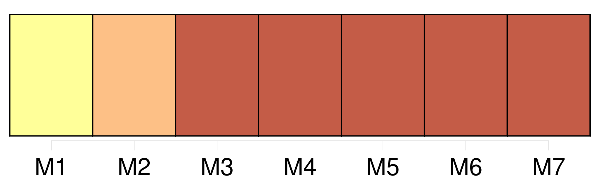
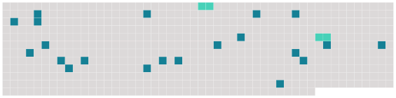

Longueur nb maillons : 23 mentions |
  |
Les plus grands peintres, lorsque, poursuivant dans le ciel la beauté idéale, ils ont rapporté sur la terre le divin portrait de [la Madone] , n’ approchent même pas de cette fabuleuse réalité. [1 phrases] [Elle] était assez grande, avec une taille et un port de déesse ; [ses] cheveux, d’ un blond doux, se séparaient sur le haut de [sa] tête et coulaient sur [ses] tempes comme deux fleuves d’ or ; on aurait dit une reine avec [son] diadème ; [son] front, d’ une blancheur bleuâtre et transparente, s’ étendait large et serein sur les arcs de deux cils presque bruns, singularité qui ajoutait encore à l’ effet de prunelles vert de mer d’ une vivacité et d’ un éclat insoutenables. [2 phrases] Je ne sais si la flamme qui les illuminait venait du ciel ou de l’ enfer, mais à coup sûr [elle] venait de l’ un ou de l’ autre. [Cette femme] était un ange ou un démon, et peut-être tous les deux ; [elle] ne sortait certainement pas du flanc d’ Ève, la mère commune. Des dents du plus bel orient scintillaient dans [son] rouge sourire, et de petites fossettes se creusaient à chaque inflexion de [sa] bouche dans le satin rose de [ses] adorables joues. Pour [son] nez, il était d’ une finesse et d’ une fierté toute royale, et décelait la plus noble origine. Des luisants d’ agate jouaient sur la peau unie et lustrée de [ses] épaules à demi découvertes, et des rangs de grosses perles blondes, d’ un ton presque semblable à [son] cou, [lui] descendaient sur la poitrine.
De temps en temps [elle] redressait [sa] tête avec un mouvement onduleux de couleuvre ou de paon qui se rengorge, et [imprimait] un léger frisson à la haute fraise brodée à jour qui l’ entourait comme un treillis d’ argent.
[Elle] portait une robe de velours nacarat, et de [ses] larges manches doublées d’ hermine sortaient des mains patriciennes d’ une délicatesse infinie, aux doigts longs et potelés, et d’ une si idéale transparence qu’ ils laissaient passer le jour comme ceux de l’ Aurore. [1 phrases] À mesure que je [la] regardais, je sentais s’ ouvrir dans moi des portes qui jusqu’ alors avaient été fermées ; des soupiraux obstrués se débouchaient dans tous les sens et laissaient entrevoir des perspectives inconnues ; la vie m’ apparaissait sous un aspect tout autre ; je venais de naître à un nouvel ordre d’ idées. |
 |
La ressource peut être téléchargée sur la page Ortolang
Si vous avez des questions ou vous voyez des erreurs, merci d'envoyer un mail à silvia.federzoni89@gmail.com
Site développé par S. Federzoni (contact)